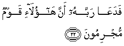

Sacred Texts Islam Index
Hypertext Qur'an Unicode Palmer Pickthall Yusuf Ali English Rodwell
Sūra XLIV.: Du<u>kh</u>ān, or Smoke (or Mist.) Index
Previous Next

The Holy Quran, tr. by Yusuf Ali, [1934], at sacred-texts.com
Sūra XLIV.: Dukhān, or Smoke (or Mist.)
Section 1
1. Hā-Mīm.

2. By the Book that
Makes things clear;—

3. Inna anzalnahu fee laylatin mubarakatin inna kunna munthireena
3. We sent it down
During a blessed night:
For We (ever) wish
To warn (against Evil).

4. Feeha yufraqu kullu amrin hakeemin
4. In that (night) is made
Distinct every affair
Of wisdom,
5. Amran min AAindina inna kunna mursileena
5. By command, from Our
Presence. For We (ever)
Send (revelations),
6. Rahmatan min rabbika innahu huwa alssameeAAu alAAaleemu
6. As a Mercy
From thy Lord:
For He hears and knows
(All things);
7. Rabbi alssamawati waal-ardi wama baynahuma in kuntum mooqineena
7. The Lord of the heavens
And the earth and all
Between them, if ye (but)
Have an assured faith.
8. La ilaha illa huwa yuhyee wayumeetu rabbukum warabbu aba-ikumu al-awwaleena
8. There is no god but He:
It is He Who gives life
And gives death,
The Lord and Cherisher
To you and your earliest
Ancestors.
9. Bal hum fee shakkin yalAAaboona
9. Yet they play about
In doubt.
10. Fairtaqib yawma ta/tee alssamao bidukhanin mubeenin
10. Then watch thou
For the Day
That the sky will
Bring forth a kind
Of smoke (or mist)
Plainly visible,
11. Yaghsha alnnasa hatha AAathabun aleemun
11. Enveloping the people:
This will be a Penalty
Grievous.
12. Rabbana ikshif AAanna alAAathaba inna mu/minoona
12. (They will say:)
"Our Lord! Remove
The Penalty from us,
For we do really believe!"
13. Anna lahumu alththikra waqad jaahum rasoolun mubeenun
13. How shall the Message
Be (effectual) for them,
Seeing that an Apostle
Explaining things clearly
Has (already) come to them,—
14. Thumma tawallaw AAanhu waqaloo muAAallamun majnoonun
14. Yet they turn away
From him and say: "Tutored
(By others), a man possessed!"
15. Inna kashifoo alAAathabi qaleelan innakum AAa-idoona
15. We shall indeed remove
The Penalty for a while,
(But) truly ye will revert
(To your ways).
16. Yawma nabtishu albatshata alkubra inna muntaqimoona
16. One day We shall seize
You with a mighty onslaught:
We will indeed (then)
Exact Retribution!
17. Walaqad fatanna qablahum qawma firAAawna wajaahum rasoolun kareemun
17. We did, before them,
Try the people of Pharaoh:
There came to them
An apostle most honourable,
18. An addoo ilayya AAibada Allahi innee lakum rasoolun ameenun
18. Saying: "Restore to me
The servants of God:
I am to you an apostle
Worthy of all trust;
19. Waan la taAAloo AAala Allahi innee ateekum bisultanin mubeenin
19. "And be not arrogant
As against God:
For I come to you
With authority manifest.
20. Wa-innee AAuthtu birabbee warabbikum an tarjumooni
20. "For me, I have sought
Safety with my Lord
And your Lord, against
Your injuring me.
21. Wa-in lam tu/minoo lee faiAAtazilooni
21. "If ye believe me not,
At least keep yourselves
Away from me."

22. FadaAAa rabbahu anna haola-i qawmun mujrimoona
22. (But they were aggressive:)
Then he cried
To his Lord:
"These are indeed
A people given to sin."
23. Faasri biAAibadee laylan innakum muttabaAAoona
23. (The reply came:)
"March forth with my servants
By night: for ye are
Sure to be pursued.
24. Waotruki albahra rahwan innahum jundun mughraqoona
24. "And leave the sea
As a furrow (divided):
For they are a host
(Destined) to be drowned."
25. Kam tarakoo min jannatin waAAuyoonin
25. How many were the gardens
And springs they left behind,
26. WazurooAAin wamaqamin kareemin
26. And corn-fields
And noble buildings,
27. WanaAAmatin kanoo feeha fakiheena
27. And wealth (and conveniences
Of life), wherein they
Had taken such delight!
28. Kathalika waawrathnaha qawman akhareena
28. Thus (was their end)!
And We made other people
Inherit (those things)!
29. Fama bakat AAalayhimu alssamao waal-ardu wama kanoo munthareena
29. And neither heaven
Nor earth shed a tear
Over them: nor were
They given a respite (again).